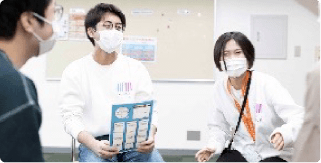

昭和24年に設立された中部日本唯一の総合大学「名城大学」の創立者。初代総長、理事長を歴任。昭和34年に本学院の母体となる「名城大学付属東京テレビ高等技術学校」を創立し、理事長に就任。わが国における専門学校教育の礎を築く。
-
- 名城大学付属
東京テレビ
高等技術学校を創立 - 総合学院テクノスカレッジは、ノーベル賞受賞者を多数輩出している名城大学の付属学校として創立され、わが国における文部省認定唯一のテレビ専門学校として認定を受けました。
- 名城大学付属
-

- 東京工学院専門学校
に校名改称 - 専修学校法の施行に伴い、いち早く専門学校の許可を受け、「東京工学院専門学校」に校名を改称しました。平成12年には、観光系の学科を集約し、東京エアトラベル・ホテル専門学校に校名改称。
- 東京工学院専門学校
-
▲ 英国・オックスフォード大学ペンブローグ・カレッジ▲ 米国・ホープ大学
- 海外姉妹校との
提携開始 - 英国・オックスフォード大学ペンブローク・カレッジを始め、現在までに海外10大学と海外姉妹校の提携を結んでいます。
- 海外姉妹校との
-
▲ 米国・ホープ大学
- 小金井市に
キャンパスを統合 - 都内に点在していた校舎を小金井新キャンパスに統合。「多様な学科を横断する学び」が実現することに。
- 小金井市に
-
- 大学コースを開設
産業能率大学と提携 - その他、日本大学、中央大学、姫路大学、星槎大学と提携。
- 大学コースを開設
-
- 両校の総称を
「総合学院
テクノスカレッジ」へ - 東京工学院専門学校、東京エアトラベル・ホテル専門学校の両校の総称を「総合学院テクノスカレッジ」に。
- 両校の総称を
-
- 小金井市と
地域活性化包括連携
協定を締結 - 小金井市のほかに東京・国分寺市とも協定を結び、さまざまなプロジェクトが進んでいます。また、長野県佐久市とも連携が拡がっています。
- 小金井市と
-

- ICTの環境を
加速して整備
社会とつながる
実学を拡充 - 一人一台のノートパソコンを使ったハイブリット授業や、いつでも、どこでも、誰とでもつながるキャンパスのICT化など、より学びやすく、より社会とつながる学びを実現しました。
- ICTの環境を
創立以来、
約７万人の卒業生を輩出。
多様な分野でキャリアを
輝かせています。
-
全学科入学オリエンテーション入学オリエンテーションで
人類共通の課題をテーマに議論！４月に行った新入学生を対象とする入学オリエンテーションでは、SDGs（国連が定めた持続可能な未来づくり）をテーマに、全学科の学生が人類共通の課題について議論するグループワークに挑みました。グループは学科単位ではなく、いろんな学科の学生が組み合わさるよう構成されているため、幅広い視点いによる意見が続出。「他学科の学生から刺激を受ける学び」は、入学オリエンテーションから始まっているのです。
-
建築学科×情報システム科×電気電子学科×みどりの村インテリアデザイン科×観光・ツーリズム科×鉄道交通科長野県「みどりの村」を地域と地球に
やさしいスマートヴィレッジに！１年次の研修を始め、さまざまな学科のゼミ活動や資格対策合宿で利用する長野県佐久市にあるテクノス所有の温泉宿泊施設「みどりの村」。建築学科、情報システム科、電気電子学科の学生たちがコラボし、自然エネルギーを利用したスマートヴィレッジづくりに挑戦しています。さらに、観光・ツーリズム科の学生たちは、観光地で仕事をするワーケーションのツアー商品を企画しています。
-
ブライダル科×ホテル科×コンサート・イベント科×音響芸術科シヴィルマリッジ映像メディア学科×デザイン科×ミュージック科本物のカップルの結婚式を
学生たちがプロデュース。シヴィルマリッジ（市民結婚式）とは、市町村など公的機関が認可した場所で執り行う、近年注目されている挙式スタイルです。テクノスカレッジでは国分寺市に提案し、本物の新郎新婦の結婚式を学生たちがプロデュース。式の企画、挙式準備、リハーサル、当日の運営まで、ブライダル科の学生を始め、さまざまな学科の学生たちが協働しながらつくりあげていく感動のプロジェクトです。

-
全学科TECHNOS祭2020年の学院祭は会場を分散して
YouTube配信型で開催！毎年10月に行う学院祭イベント「TECHNOS祭」は、学科の垣根を越えた学生運営組織が中心となって企画から運営までを行っています。大規模なイベントを成功させるためには、企画から準備までのプロセスが特に重要です。全学科の学生がお互いを理解し、協働する力が試される場となっています。2020年度は新型コロナウイルス感染症対策として会場を分散し、映像メディア学科の学生が各地を映像で結ぶなどの工夫を凝らして開催しました。
テクノスカレッジ
本物の教育
本物の職業人になるための
3つの本質的な力
-
- 専門性
- 自分の興味・適性を
時代や社会の要請と
マッチングさせ、
人生を切り開く
職業力
-
- 総合力
- 多方面にわたる知識や
関心をもとに、
困難にもくじけない
柔軟な思考を
支える力
-
- 人間力
- 協力して
課題解決に当たる、
人脈を広げる、といった
コミュニケーションの
源泉となる力
「社会の縮図で学ぶ」を
通して成長する
通して成長する
-
PProject-based learning課題解決型学習
授業やイベントを通して、仲間たちと協働しながら目標達成に向けて取り組み課題解決力を身につけます。
-
RReal-work learning実働実践型学習
身につけた知識やスキルを社会で実践することにより、社会で通用する実働力を身につけます。
-
AActive learning主体的参加型学習
学修テーマやイベントに学生が主体となって挑戦し、そこで得た気づきや発見を自信と力に変えます。
-
GGlobal learning海外体感学習
世界の文化・習慣・価値観など異文化理解を深め、海外の知見や人脈を活用する力を身につけます。
P
本物の社会課題に挑戦する！プロジェクト型の学び
Project-based learning
課題解決型学習
- 身につく力
- 課題解決力 ／ 探究する力 ／
協働力とリーダーシップ力 ／ コミュ二ケーション力
学びのTOPICS – 01
オープンキャンパスの企画・運営
学生たちが
主体的に活動する
主体的に活動する
テクノスのオープンキャンパスは、プログラムの企画、当日の進行や運営、SNSの発信まですべて学生スタッフが自ら考えて行動しています。これも、課題解決型学習の一つ。「どうしたら高校生の皆さんに魅力を感じてもらえるイベントになるか？」をテーマに様々なことに挑戦しています。
学びのTOPICS – 02
TECHNOSゼミ
身につけた
知識と技術を実践する
知識と技術を実践する
すべての学年のカリキュラムに取り入れられているのが「TECHNOSゼミ」です。１年次は「基礎ゼミ」、２年次は「応用ゼミ」、そして３・４年次は「発展ゼミ」と「大学コースゼミ」となり、年次を重ねるごとにテーマが難しくなります。また、「TECHNOSゼミ」で考えた内容は就職活動でも役立ちます。
R
学んだスキルを社会の場で実践する学び
Real-work learning
実働実践型学習
- 身につく力
- 専門的な知識と技術 ／ 社会人の心構え・マナー ／
プロとしての経験 ／ 責任感と自信
学びのTOPICS – 01
テクノスポーツクラブ
学生が運営する
近隣の子どもたちを対象とした
テクノスポーツクラブ
近隣の子どもたちを対象とした
テクノスポーツクラブ
地域の子どもたち200人以上が通う「テクノスポーツクラブ」は、スポーツビジネス科の学生たちが中心となって企画・運営しています。スイミングスクールやサッカースクールを通して、子どもたちにスポーツの楽しさ、ケガをしない体づくり、上手になる喜びなどを感じてもらえるよう取り組んでいます。
学びのTOPICS – 02
小金井市PR動画制作
市の依頼を受けて
学生たちがつくったPR動画
学生たちがつくったPR動画
キャンパスのある小金井市政施行60周年事業の一環として、市の魅力を世界へ発信するPR動画をテクノスの学生たちが制作。脚本、撮影、音声、照明、編集、出演に至るまで「オールテクノス」で取り組み、ドラマ仕立てのムービーやダイジェスト版の動画を作成、好評を博しました。
A
やりたいことに本気でチャレンジする学び
Active learning
主体的参加型学習
- 身につく力
- 自ら考える力 ／ 挑戦する力 ／
あきらめない力 ／ 幅広い視野
学びのTOPICS – 01
「インテル・アカデミー」で
本場イタリアのサッカー指導に挑戦
本場イタリアのサッカー指導に挑戦

世界最高水準の
サッカー指導法を学ぶ
サッカー指導法を学ぶ
FCインテルナツィオナーレ・ミラノと提携し、国内のインテルアカデミージャパンで現場実習を行っています。コーチング、マーケティング、ビジネスモデルといった世界最先端のスポーツビジネスを学びながら、自ら行動する力や挑戦する力など、社会で活かせるスキルを身につけることができます。
学びのTOPICS – 02
英語・音楽・体育などを
活かした「理想の保育園づくり」
活かした「理想の保育園づくり」
きしゃぽっぽ保育園で
子どもたちに英会話レッスン
子どもたちに英会話レッスン
キャンパス内に併設されている「きしゃぽっぽ保育園」では、様々な学科の学生たちが企画・運営する児童教室を開催しています。例えば、英語キャリアの学生が企画しているのは「英語を楽しむ教室」。子どもたちに興味をもってもらうにはどうしたらいいか？児童だけではなく、学生たちも学んでいます。
G
海外の知見を味方につける学び
Global learning
海外体感学習
- 身につく力
- 語学力 ／ 同世代コミュニケーション力 ／
海外情報時世探求力 ／ 異文化理解
学びのTOPICS – 01
インターナショナルウィーク
海外姉妹校の学生や教授と
交流を深める2週間
交流を深める2週間
毎年6月に開催されるテクノス最大の国際交流イベント「インターナショナルウィーク」では、海外姉妹校の教授や選抜された学生たちが、本校に2週間滞在。体験授業や学生が企画する各種イベントを通じて交流を深めます。言葉や文化が異なる人々との交流を通じてグローバル時代に生きる力を育みます。
学びのTOPICS – 02
オックスフォード大学に3週間滞在して学ぶ
「オックスフォード大学研修」
「オックスフォード大学研修」
イギリスでの人脈を広げ
異文化を体感する
異文化を体感する
イギリス・オックスフォードを３週間訪れて現地の文化や習慣を肌で感じる「オックスフォード大学研修」は、テクノス生のほか年齢・国籍を問わず様々な人が参加するため、国境を越えた友情を育むことができます。またすべての学生がホームステイを行い、イギリスのリアルな暮らしを体感します。
目的に合わせた
様々な学び方
専門学科で「専門性の高い知識・技術」を
身につけてプロとしてすぐに活躍する、
大学コースをプラスして「幅広い学問と教養」を学修するなど
あなたの将来の目的に合わせた学び方を選べます。
未来を見据えた
テクノスの「実学」
すぐに活躍する力を身につける
＜2・３年制の専門学科＞
-
専門的な知識と
技術を身につける。キャリアの
土台を築く -
身につけた知識と
技術を実習で実践する。周囲と
協働する
力も！ -
在学中に社会で
リアルに実働する。緊張する
環境で
自らの力を
発揮！
- 身につく力
-
- 課題解決力
- 探究する力
- 協働力とリーダーシップ力
- コミュ二ケーション力
- 専門的な知識と技術
- 社会人の心構え・マナー
- プロとしての経験
- 責任感と自信
- 自ら考える力
- 挑戦する力
- あきらめない力
- 幅広い視野
- 異文化理解
- 世界の情報を集めて活かす力
- 語学力
- グローバルコミュニケーション力
卒業後のキャリアイメージ
＜2・３年制の専門学科＞
-
在学中の実働経験を活かして
即戦力として活躍する。身につけた
実践力が
武器に！ -
自分らしく
仕事する。自信をもって
仕事に
取り組む -
業界の最前線など
活躍の場が広がる。業界を超えた
活動にも
挑戦！
- キャリアイメージ
-
- 即戦力として
すぐに
活躍できる - 主体的に
仕事に
取り組める - 活躍の場を
広げて
いける - 業界の
最前線で
仕事ができる - 社会の
変化に
対応できる
- 即戦力として
就職はゴールではなく、
「その夢の先を見せる」学びを。
それがテクノスの実学です。
学びをより深める
＜4年制の大学コース＞
-
大学コースの
学修をするうえで
必要となる基礎的な
学力を高める。高校までの
学びを復習
（国語・数学） -
3・4年次に
幅広い教養や
高度専門力を
身につける。知識と技術が
より広く、
深くなる -
目指す業界が抱えている
問題は何か？
自ら課題を設定して
解決方法を考える。考えた
アイデアの
実践力を
磨く -
学科を横断した
チームを組んで
SDGsなどの
社会課題に挑戦する。 多様な力を
多様な力を
もつ人々と
協働する！
- 身につく力
-
- 課題解決力
- 探究する力
- 協働力とリーダーシップ力
- コミュ二ケーション力
- 専門的な知識と技術
- 社会人の心構え・マナー
- プロとしての経験
- 責任感と自信
- 自ら考える力
- 挑戦する力
- あきらめない力
- 幅広い視野
- 異文化理解
- 世界の情報を集めて活かす力
- 語学力
- グローバルコミュニケーション力
- 高度な専門力
- 幅広い教養
- 分析力と論理的な思考
- 知識や情報をつなげる力
卒業後のキャリアイメージ
＜4年制の大学コース＞
-
目的意識をもって
仕事に取り組める。仕事の
理解力が
深い -
挑戦的な
仕事のチャンスも。プロジェクト
チームで
力を発揮！ -
仕事を通じて社会や業界の
未来づくりに関わる。暮らしの
イノベーションや
地域創生などで
活躍
- キャリアイメージ
-
- 目的意識を
もちながら
仕事ができる - チームで
協働する仕事で
力を発揮する - 挑戦的な
仕事を
与えられる - 柔軟な
思考や発想で
課題を解決する - 業界や社会の
未来づくりに
関わる人になれる
- 目的意識を
将来を描きながら、
その目標に向けて学ぶのが、
テクノスカレッジの学修スタイル。
5年後の「自分のありたい姿」を明確にすることで、
自分に必要な力がわかり、学びのプランが立てやすくなります。
それがテクノスオリジナルの「卒後ビジョン」。
My卒後ビジョンを描いた後の学修の流れ
NEXT-卒後ビジョンの描きかた
STEP1 ／未来を想像しよう
5～10年後の未来はどう変わる？
STEP2／5年後の目指す姿とテクノスでの学ぶ姿をイメージしよう
5～10年後の未来はどう変わる？
STEP2／5年後の目指す姿とテクノスでの学ぶ姿をイメージしよう
5～10年後の未来はどう変わる？
STEP3／自分の卒後ビジョンをつくろう
あなたの将来の夢や目標を想像し、
叶えるための道のりを描いたものが
「卒後ビジョン」です。
STEP4／オープンキャンパスで「卒後ビジョン」を一緒に描こう
オープンキャンパスでは、
あなたの「卒後ビジョン」について
教員や学生のアドバイスをもとに
一緒に描きます。
ぜひ参加してみよう！
-
専用のワークシートにあなたの夢や将来やりたいことを記入し、これらを実現するために必要な学びプランを考えていきます。
-

ワークショップでは教員や学生によるアドバイスを受けながら実施します。先輩学生もすでに卒後ビジョンを描いていますので、どんな将来像を考えたのか気軽に聞いてみては？
-
学科ページの卒後ビジョンも参考にしよう
当HPの各学科紹介ページには、各学科の「育てたい人物像」である卒後ビジョンが掲載されていますので、自分の未来を描くための参考になります。ぜひご覧ください。